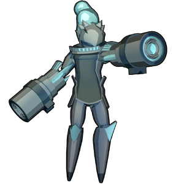

Yuki
背景

由 Ancient Humans 之手创造的安卓，被注入冰元素之力。它被创造者视为失败作品，于是力量被封锁，并被囚禁在冰之领域，永远不得挣脱枷锁。
某一天，一个未知实体将它从冰之领域带走，用来测试它与遭遇者交战时的强度。
策略
Yuki 战斗由 2 个阶段组成：地面阶段和飞行阶段。
第 1 阶段中，Yuki 会尝试拳击和抓取玩家。HP 降至 50% 时，Yuki 可以捶击地面，释放紫色冲击波。
第 2 阶段中，Yuki 会永久处于飞行状态。Yuki 会获得远程冰攻击。HP 降至 50% 时，Yuki 会解锁完整招式组，可以用冰墙把竞技场部分区域分隔开，也能使用毁灭性的激光攻击。
统计
基础 HP：10000
伤害：物理和冰霜
该 Boss 有两个阶段。
| 属性 | 抗性 |
|---|---|
| 物理 | 中性 (1x) |
| 火焰 | 中性 (1x) |
| 冰霜 | 中性 (1x) |
| 电击 | 弱点 (1.25x) |
| 光耀 | 中性 (1x) |
| 暗影 | 中性 (1x) |
| 毒 | 中性 (1x) |